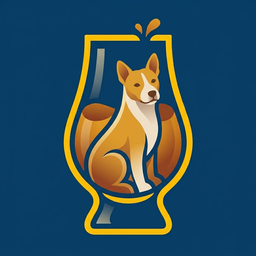

Drunkin Support
Need help? Email SUPPORT_EMAIL and include your iPhone model and iOS version.
Getting started
- One person taps Host a tasting, names it and picks a starting menu. Edit flights and pours any time in Host tools.
- Everyone else taps Join a tasting nearby, picks the host's tasting and types the 6-digit join code shown on the host's phone.
- Pick your name, then score each pour from 1 to 5. Scores stay hidden until everyone at the table has scored, then reveal on every phone at once.
- When you're done, tap Share tasting file to send everyone the results.
Phones can't find each other
- Keep Drunkin open and on screen on the host's phone. iOS pauses nearby connections when an app is in the background.
- Turn on Bluetooth and Wi-Fi on every phone. You don't need to be connected to a Wi-Fi network or have cell signal.
- Allow Local Network for Drunkin: Settings → Privacy & Security → Local Network → Drunkin.
- Stay within about 30 feet (10 m) of the host.
Common questions
Do I need internet? No. Phones talk to each other directly.
What if the host's phone dies? Guests keep scoring; everything syncs when the host reopens the tasting. To move hosting to another phone, the host uses Host tools → Hand off hosting.
Can I change my score? Until the pour reveals, yes. After that your score locks, but your notes stay editable.
Someone went to bed mid-flight. The host can take them off the table in Host tools → At the table, or tap Reveal now on a pour.
How many people can join? Up to 40 tasters per tasting.
Please drink responsibly. If you or someone you know needs help, the SAMHSA National Helpline is free and confidential: 1-800-662-4357.